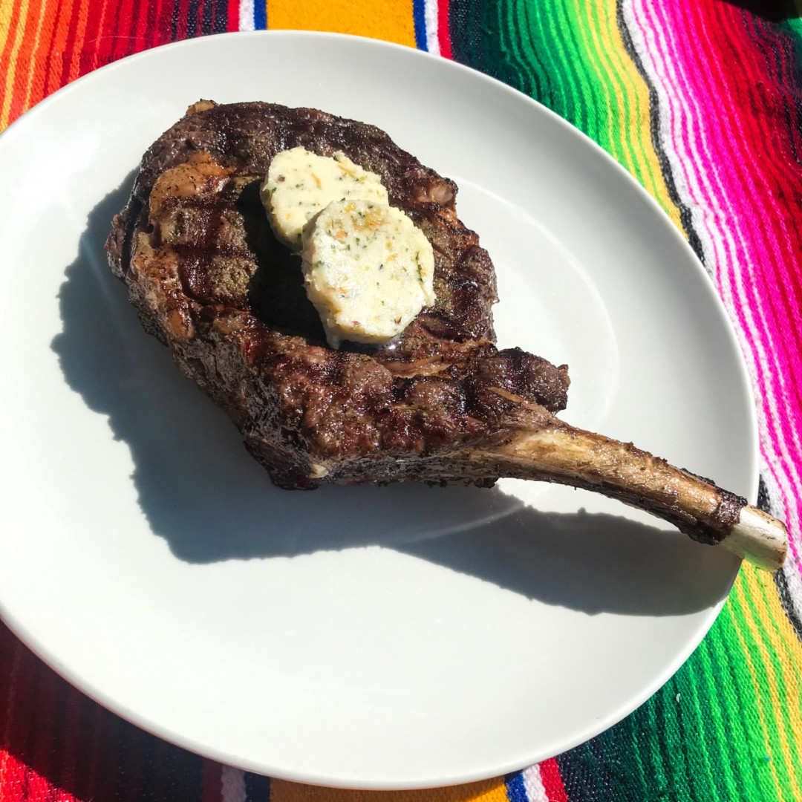

Bone-In Ribeye with Roasted Garlic Butter

Description:
Indulge in the rich flavors of a perfectly grilled Bone-In Ribeye, elevated
with the savory goodness of Roasted Garlic Butter. With a simple yet
sophisticated preparation, enjoy the tenderness of the steak complemented by
the aromatic and creamy notes of homemade garlic butter. Savor a culinary
delight that's easy to make but tastes like a gourmet masterpiece.
Ingredients:
Steak
- One US Wellness Meats Large French Ribeye (1.5 lbs)
- Salt
- Pepper
- 2 Teaspoons of Avocado Oil
Garlic Butter
- One large head garlic (or two smaller heads)
- One teaspoon avocado oil
- Salt
- Four ounces salted butter
- One teaspoon preferred dried herbs
Instructions:
For the butter:
- Pre-heat oven to 375 degrees.
- Slice the top off the garlic head to expose the cloves.
-
Drizzle oil over the cloves, sprinkle on salt, wrap in aluminum foil.
- Bake for 45 minutes to an hour until cloves are soft and golden.
- Allow garlic to cool for 10 minutes.
-
Blend garlic, softened butter (salt if needed), and dried herbs in a bowl
with a spatula.
-
Form butter into a log on plastic wrap, roll tightly, and refrigerate to
firm up.
- This can be done a day in advance to allow flavors to marry.
For the Steak:
-
The night before, liberally salt the steak and place it on a baking rack
over a plate, uncovered in your refrigerator.
-
Remove from the refrigerator 30 minutes prior to cooking, pat dry, rub
with oil, and season with pepper to your taste.
- Pre-heat grill to high if using gas or prepare coals.
-
Grill the steak for 4-5 minutes per side for a medium-rare preparation
(internal temp of 135 degrees).
-
Remove steak from grill, tent with aluminum foil, and let it rest for 5
minutes.
-
Slice garlic butter into 1/4 inch rounds and add the desired amount on top
of the steak. Enjoy! (2-3 rounds per steak works well.)